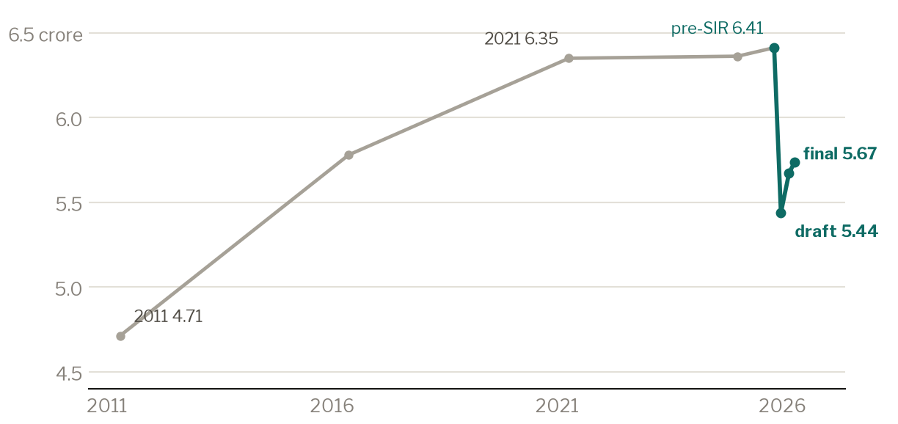
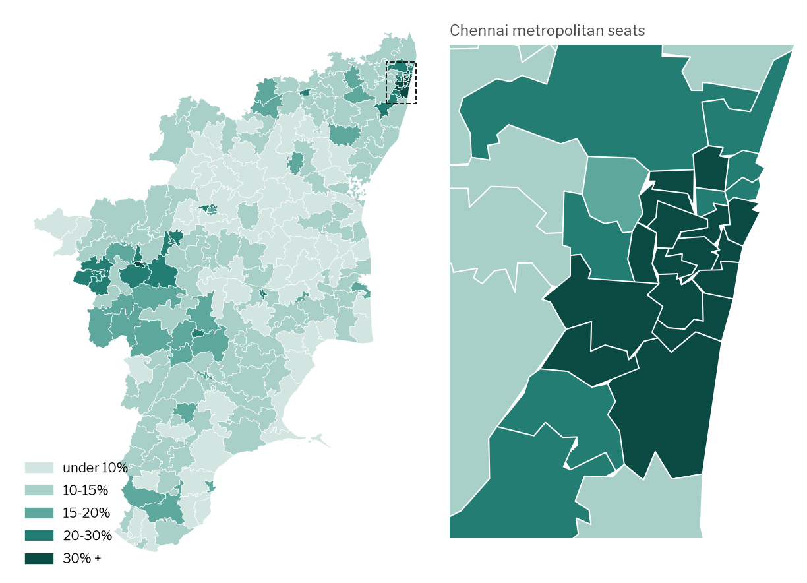
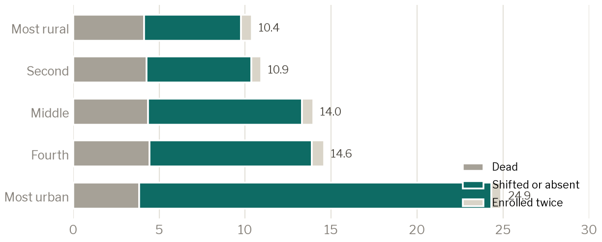
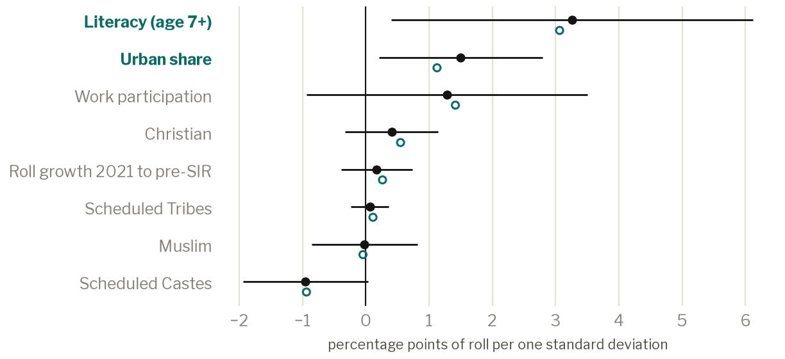
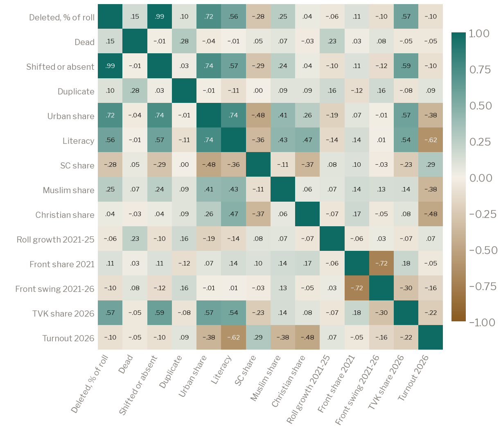
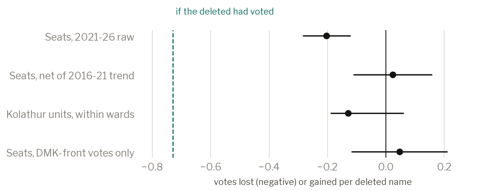
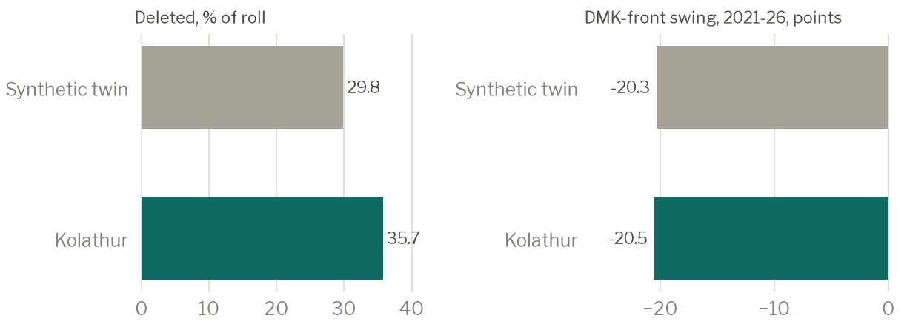
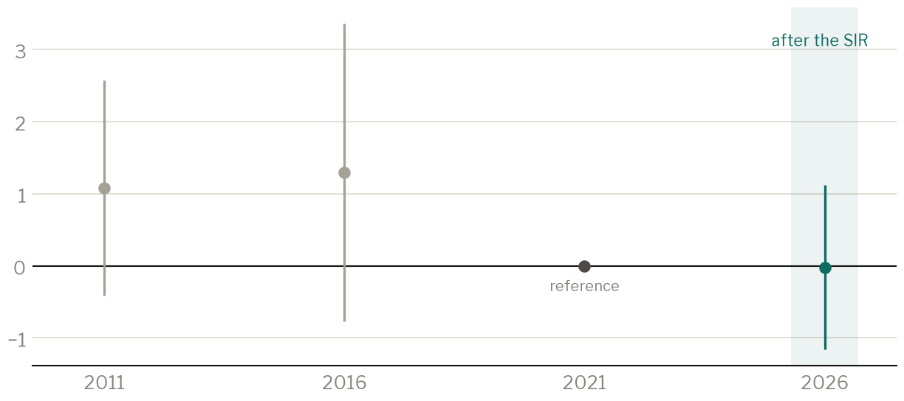

Introduction
In late 2025 the Election Commission of India ordered a Special Intensive Revision of Tamil Nadu's electoral rolls. Booth officers went door to door with pre-filled enumeration forms; electors whose forms did not come back were recorded as absent, shifted or dead and left off the draft roll published on 19 December 2025. 97.4 lakh names went, 15.2 percent of the roll. In April 2026 the DMK lost power to a coalition led by the new Tamilaga Vettri Kazhagam (TVK), and the Chief Minister, M. K. Stalin, lost Kolathur, a seat he had held since 2011, by 8,795 votes after the revision had removed 1,03,812 of its electors. The coincidence produced an immediate claim that the revision had engineered the result.
That claim is causal and counterfactual: had the deleted names stayed on the roll, would the votes, and the winners, have been different? Deletions were not randomly assigned. They followed migration, death and urban churn, and those same forces shaped the 2026 vote, so no single regression answers the question. We assemble the most detailed public record we could find (constituency deletions by reason for all 234 seats, part-wise deletion counts for 75,003 polling-station parts, Census 2011 down to Chennai's wards, and a seven-election booth panel for Kolathur linked across renumbering by street section) and use several designs whose weaknesses differ: a difference in vote-loss gradients across two electoral periods, a synthetic counterfactual for Kolathur, exact-sum booth units within wards, and a bound that converts the estimated vote loss into the partisan lean a reversal would require.
Across the state the designs agree. Seats that lost more names lost no more votes than their own pre-2021 trend predicts, the DMK front's votes did not fall with deletions, and deletions did not run higher where the DMK was strong. Kolathur is harder. Its booths that lost more names gave the DMK no smaller share, but whether they lost votes depends on how booth size is handled, and the seat-level comparison with similar constituencies is too coarse to resolve its margin. We state what this does and does not establish. The evidence does not support the claim that the revision decided the statewide result. It neither confirms nor excludes a decisive effect in Kolathur or in the few seats decided by very small margins. It cannot see wrongful deletion targeted at individuals within booths, and it is silent on any effect common to every seat.
Every number in the paper is produced by a script from a public record, and the paper itself is generated from the result files. No voter's name, age or address is published.
The revision and who controlled it
The Election Commission set the rules: the enumeration form, the three deletion reasons, the documents required to claim back a place. The people who applied the one discretionary judgment, that an elector could not be found at the registered address, were Booth Level Officers and their supervisors: teachers, revenue staff and other employees of the state government deputed to election duty under Electoral Registration Officers. During the revision that machinery worked under the Commission's superintendence, but its members belong to a state administration then run by the DMK, which opposed the revision in public and in court. A purge aimed at the DMK would have had to run through the DMK government's own field staff, though officials on election duty answer to the Commission, which can discipline and transfer them, so neither side's control was complete.
Parties watched the process through booth-level agents, who can flag the removal of supporters, file claims and contest objections. In Kolathur the AIADMK had a registered agent in 286 of 286 parts, the DMK in 286, the Congress in 285, the BJP in 189 and the NTK in 111; TVK, not yet a recognised party, had none (the list we have was captured after the poll, so it describes appointments then in force). The monitoring was very likely asymmetric in the incumbent's favour, and the voters least represented inside the process (young, mobile, renting and newly arrived) were those most drawn to TVK. The direction in which administrative discretion could have been bent is therefore an empirical question, and we test both. A third possibility needs no partisanship at all: under a fixed deadline, marking an unreturned form 'absent' is the low-effort choice, which predicts deletions that rise with non-response and caseload and are unrelated to party.
What is being estimated
Four quantities are in play, and the public debate moves between them.
- The total effect of the revision on the 2026 result: the state with the SIR against the same state without it. Every seat was treated, so no design here identifies this.
- The effect of deletion intensity: how outcomes differ where more names were removed. Our seat and booth designs estimate this. It equals the first only if the effect is proportional and has no common component.
- The effect of wrongful deletions: of eligible residents who would have voted. Its empirical counterpart is the number of votes lost per deleted name, which the bound needs.
- The effect of selective wrongful deletions: wrongful removals concentrated among one party's voters. This is what 'engineered the result' means.
The common thread is votes lost per deleted name and their partisan composition. Table 1 sets out which mechanisms each design can and cannot detect.
| Mechanism | Seat-level gradients | Kolathur booth units | Synthetic Kolathur | Bound | Detectable here? |
|---|---|---|---|---|---|
| Deletions removing would-be voters, more where cuts are deeper | yes | yes | yes | uses it | yes |
| Removal aimed at one party's booths | yes | yes | partly | n/a | yes |
| Removal aimed at one party's voters within booths | no | no | only as part of the seat total | n/a | no: needs elector-level lists |
| A uniform effect of the revision on every seat | no | no | no | as a scenario | no |
| Selective restoration during claims | no | no | partly | no | partly, Chennai counts only |
| Votes cast in dead or absent names before the revision | confounded by mortality | no | no | no | no |
| Namesake candidates, postal-ballot handling | n/a | n/a | n/a | n/a | yes, seat by seat |
Table 1. Mechanisms and the designs that can detect them.
Data
Deletions. The CEO's constituency-wise counts by reason for the 19 December 2025 draft, and roll totals for January 2025, the draft, the 23 February 2026 final roll and the April 2026 poll roll. Part-wise counts by reason come from the India SIR Data Center (tamilnadu.sir.vote), an independent compilation of the CEO's part-wise lists, from which we took counts and aggregates only. We vetted it before use: its seat totals equal the CEO's by every reason in 202 of 234 seats; the other 32 fall short by 4,319 names in all, because the source itself omits a few parts; none overshoots. Its age and gender tables are complete and plausible. Its district totals follow its own map, and its name-based guesses at religion and caste understate minorities several-fold (Muslims 2.0 percent of the deleted against 6.1 percent on Census shares), so we use neither.
Results. ECI candidate totals for 2021 and 2026 with EVM and postal votes; Form 20 booth returns for every election Kolathur has held since 2011, reconciled exactly to official totals; statewide 2021 and 2026 booth returns validated in a companion project.
Kolathur's booth panel. Polling stations were renumbered and split during the revision, from 238 parts to 286. Booths are linked across years by the street sections each covers. Where a 2021 part maps to several 2026 parts, or the reverse, they are grouped into 125 stable units whose 2021, 2024 and 2026 votes are exact sums, needing no apportionment; our headline Kolathur tests use these units.
Census. The 2011 Primary Census Abstract aggregated from SHRUG's shrid-level files to the 2008 constituencies, with religion from the Census table by religion; Chennai's 16 seats from its 155 census wards by area overlap, which replaces a city-wide average. Twenty-six seats in other corporations still share pooled values and are flagged; robustness samples exclude them.
Claims. Greater Chennai Corporation's lists of claims and objections, counted, not read. Claim counts include first-time registrants as well as people seeking to be restored.
The revision across the state
The SIR began from a roll of 6.41 crore. The draft removed 97.4 lakh; 23.3 lakh were added back before the final roll, which stood 11.6 percent below the pre-revision roll and 2.6 percent below the roll of 2016 in the same seats. The median seat lost 12.3 percent; Chennai's sixteen lost 35.6 percent, the rest of the state 13.8.
Fifteen years of growth, then a cliff
Registered electors in Tamil Nadu, crore

Sources: TCPD; CEO Tamil Nadu
Mostly a city cut
Deletions as a share of each seat's pre-revision roll; Chennai metropolitan seats enlarged

Sources: CEO Tamil Nadu; DataMeet
Deaths account for about four percent of every roll, rural or urban. The shifted-or-absent rate climbs from 5.7 percent in the most rural fifth of seats to 20.5 percent in the most urban and carries 97.5 percent of the cross-seat variance. Age tells the same story from the other side: 42.6 percent of electors aged 80 and over were removed, mostly as dead, against 8.4 percent of those in their twenties and 6.6 percent of 18 and 19 year-olds. About a quarter of the youngest deleted were removed as enrolled twice, the mark of new voters registered both at home and where they study or work. Women were 51.4 percent of the deleted and 51.0 percent of the January 2025 roll; reports of 2.6 lakh more women than men deleted describe the roll's composition, not a higher rate.
The dead are everywhere; the absent are in cities
Deletions by reason, percent of pre-revision roll, by Census urban fifth

Sources: CEO Tamil Nadu; Census 2011
With district fixed effects and district-clustered errors, a one-standard-deviation rise in literacy goes with 3.26 more points of the roll deleted (p = 0.025) and in urban share 1.50 (p = 0.023); in the 206 seats whose census figures are mapped directly rather than pooled, the urban coefficient is 1.13 (p = 0.084), so literacy is the sturdier of the two. The Muslim-share coefficient is −0.02 [−0.86, +0.82]; in the 190 seats where religion is not a city-wide average it is −0.22 [−1.07, +0.62], inside an equivalence band of one point per standard deviation in both. The 2021 front-share coefficient, −0.19, is also equivalent to zero at that band. The Scheduled Caste coefficient (−0.96, interval [−1.94, +0.03]) and the Christian coefficient (+0.41) are not distinguishable from zero but cannot be shown equivalent to it. These are associations between constituencies. They say nothing about whether a Muslim or Dalit elector within a seat was more likely to be deleted; that requires the name-level lists, and for religion even those would need a validated method, which name-based guessing is not.
Who was deleted, in a statistical sense
Change in deletion rate per one-SD rise in each characteristic, percentage points, district fixed effects, 95% intervals

Sources: CEO Tamil Nadu; Census 2011
How the seat-level variables move together
Correlations across 234 constituencies

Sources: as above
Did the deletions change votes?
Votes lost per deleted name
Regress each seat's change in votes cast, 2021 to 2026, on its deletions, with its 2021 electorate, pre-revision roll growth, census controls and district fixed effects. The coefficient is −0.20 votes per deletion (wild cluster bootstrap p < 0.001), against −0.73 if every deleted elector had voted at the 2021 turnout. Read naively, a quarter of the deleted were voters. But the same regression run on the 2016 to 2021 change, a period the 2025 deletions cannot have touched, gives a similar gradient: seats that would later lose many names were already losing votes, through death and out-migration. Stacking the two periods with seat fixed effects and district-by-period effects, the change in the gradient, which is what the revision can have caused, is +0.02 votes per deleted name [−0.11, +0.16]. Letting the effect of seat size differ between the periods gives −0.01 [−0.21, +0.19], and letting every control differ gives −0.06 [−0.25, +0.13]. Across specifications the estimate is near zero and the data exclude differential losses, beyond what the same seats were already losing and beyond the district average, of more than about a quarter of a vote per deleted name, a third of what would follow if the deleted had been voting. The 2021 baseline poll fell at the start of the second pandemic wave, which could depress the earlier period's turnout and bias the difference towards zero; the period-specific controls partly absorb it.
Votes lost per deleted name, by design
Estimates and 95% intervals; the dashed line is the loss if the deleted had voted at the 2021 turnout

Sources: ECI; TCPD; CEO Tamil Nadu
Two cautions. Re-additions after the draft and in-migration both push votes up where churn is high, so the cross-sectional estimate moves with the controls: adding net re-additions gives −0.28 for shifted-or-absent, and sizing seats by 2021 votes instead of electors gives −0.05. The duplicate category, which cannot cause votes, carries a coefficient of +2.13, a failed negative control that marks confounding by young in-movers; we therefore do not read the split by reason causally, and rely on the differenced total.
A tempting reading of the dead-name coefficient (−0.53 votes per dead deletion) is ghost voting, votes once cast in dead electors' names. It does not support that reading. Most electors recorded as dead in late 2025 were alive and voting in 2021; ordinary mortality since then (a crude death rate of 6.1 per thousand in Tamil Nadu in 2020 on the Sample Registration System, higher in the pandemic year 2021) predicts a coefficient between −0.73 and −0.43, and the estimate lies inside that range. The benchmark assumes every death since 2021 surfaced as a 'dead' deletion, which overstates it somewhat, and the smallest ghost-vote effect the test could detect is 0.55 votes per dead deletion: the question is beyond these data.
Whose votes?
If deletions had removed one party's voters, that party's votes would fall with deletions. DMK front +0.05 (SE 0.08); AIADMK +0.32 (SE 0.27); TVK −0.22 (SE 0.13); all others −0.35 (SE 0.25) votes per deletion, none distinguishable from zero at the five percent level. The DMK front's own votes did not fall with deletions, and the front's share of whatever votes were lost has an upper 95 percent bound of 0.56, below its share of the vote in most of these seats in 2021. The largest negative coefficient is TVK's: if anything, heavily cut seats gave the new party slightly fewer votes than their other traits predict, which fits the observation that its young, mobile supporters were the electors most exposed to the 'absent' judgment. It is not significant, and we do not lean on it. Share changes tell the same story: no bloc's 2021 to 2026 share moved with the shifted-or-absent rate once 2021 strength, census traits and districts are held fixed.
Swing and seats
The DMK front's 2021 to 2026 swing on deletion rates, with 2021 front share to absorb reversion to the mean and district fixed effects, gives −0.04 points of front share per point of roll deleted as shifted or absent [−0.23, +0.16]. Without district effects the estimate is −0.17 [−0.28, −0.06], and with a single dummy for Chennai in their place −0.23 [−0.37, −0.08] (wild p = 0.02). These comparisons across districts set Chennai and its suburbs, where TVK's urban wave was strongest, against the rest of the state; they confound the wave with the cut, and the within-district estimate is the cleaner one. Taken at face value, though, the Chennai-dummy estimate applied to Kolathur's shifted-or-absent rate would be roughly the size of its margin, which is one reason we do not claim the seat is settled. A stacked difference in differences against the 2016 to 2021 swing gives +0.19 [−0.55, +0.94].
Intervals matter more than significance here. For each of the 101 seats the front lost as runner-up we compute the effect per point of shifted-or-absent deletion that would have reversed it, applying the effect to the seat's whole deletion rate, and ask whether the within-district interval excludes it. It does in 69. It does not in 32, Kolathur among them; for Kolathur a loss of 0.08 points of front share per point of deletion would have sufficed, inside the interval.
TVK won 22 of the 23 seats that lost more than 80,000 names, the most quoted pattern of the aftermath. Within districts, with urbanisation, literacy and roll growth held fixed, the shifted-or-absent rate predicts TVK's share at +0.08 points per point [−0.36, +0.53]. The pattern is geography.
Kolathur
A synthetic Kolathur
We build a weighted combination of other seats that matches Kolathur on its pre-revision traits (urban share, literacy, Scheduled Caste share, 2021 front share, the 2016 to 2021 swing, roll growth and 2021 turnout), without using deletions. The twin is mostly Chepauk-Thiruvallikeni, Saidapet, Madavaram, and was itself heavily cut: about 30 percent of its roll against Kolathur's 36. So this is a comparison of doses, not of cut against uncut. Kolathur's front swing differed from the twin's by −0.21 points, about 384 votes, unremarkable against the same gap computed for every other seat (placebo p = 0.97). The test is coarse: those placebo gaps have a standard deviation of 4.8 points, against a decisive effect of 2.4 to 4.8 points, and Kolathur's pre-revision fit is worse than 89 percent of seats'. Against the plain average of the other Chennai seats the gap is −1.78 points, about 3,282 votes. Neither comparison shows an excess fall; neither could reliably detect one the size of the margin.
A deeper cut, a similar swing
Kolathur against its synthetic twin built from pre-revision traits

Sources: CEO Tamil Nadu; ECI; Census 2011
Booth units within wards
Within Kolathur's wards, a one-standard-deviation heavier cut moved the DMK's share by +0.35 points (wild cluster bootstrap p = 0.36); the placebo on the 2021 to 2024 change is −0.45 (p = 0.52). Heavily cut units did not turn against the DMK more than lightly cut ones.
Whether they lost more votes depends on the specification, because a unit's deletions track its size almost perfectly (correlation 0.995; one unit spans 46 parts). In raw counts the change is +0.03 votes per deleted name [−0.10, +0.16]; on units untouched by rationalisation −0.004 (wild p = 0.94); with high-leverage units trimmed −0.05; and in per-part rates −0.13 (wild p = 0.09). Units created by splitting differ from the rest in the vote change (interaction +0.19, SE 0.01) but not in the share change. Between the 2024 and 2026 polls heavily cut units gained +0.67 votes per deleted name, which cannot be an effect of removal and shows how strongly size and churn load onto the count. The honest summary is that Kolathur's booths lost somewhere between nothing and about a fifth of a vote per deleted name, and gave the DMK no smaller share where the cut was deeper.
These are gradients. Kolathur's cut was nearly even across its booths, so a common effect of the whole cut would sit in the ward effects and is invisible to this design. The event study over six elections, at the unit level, has imprecise pre-period coefficients (joint test p = 0.34 for assembly elections) and a 2026 coefficient of −0.02 (SE 0.58). Allowing the post-revision deviation from trend to be as large as the largest pre-period change (Rambachan and Roth's relative-magnitude restriction, M = 1) gives [−2.5, +2.4]: the history can neither confirm nor exclude a modest gradient.
No break in 2026
DMK share on deletion intensity by election, Kolathur stable units, assembly elections, 2021 = 0; grey points rest on apportioned votes

Sources: Form 20; India SIR Data Center
Booth-level targeting shows nothing, though tests across 27 supervisors have little power. Within wards, the share of a part's deletions recorded as absent, the most discretionary code, does not rise with the DMK's 2021 share (wild p = 0.40); across the 27 supervisors, mean deletions are unrelated to the DMK's strength in their areas (p = 0.40) and to caseload. An instrument built from supervisors' leniency is weak (first-stage F = 3.2), and a placebo built from neighbouring parts regardless of supervisor predicts better (F = 8.1): the variation is local churn, not officers, and we do not use it.
Could the deletions have decided any seat?
Suppose a share of a seat's D deletions were wrongful and those people would have voted. If the votes they would have cast were split p to (1 - p) between the losing front and the winner, the front needed p = 1/2 (1 + M / (D v)) to recover a margin M, where v is votes lost per deleted name. Earlier versions of this analysis assumed v = 0.5 x 0.65. We now take v from the estimates, at the least favourable end of each interval: from 0.10 to 0.28 votes per deletion across six designs. Some of these are within-district or within-ward gradients and cannot see a common loss, which is why we report the whole range. Over it, reversing Kolathur requires the lost votes to have been 65 to 91 percent DMK on a two-party basis. The DMK held 75 percent of the two-party vote against the AIADMK in 2021 and 47 percent against TVK in 2026. The low end of the range is below the first benchmark and every value is above the second: on these numbers a reversal requires the deleted to have favoured the DMK far more than the electorate that voted in 2026 and, in 4 of the 6 estimates, no more than Kolathur did in 2021. The bound treats every lost vote as going to one of the two leaders; votes that would have gone to third parties make a reversal harder, so it is conservative. Of the 101 seats the front lost as runner-up, between 2 and 6 would need a lean under 55 percent.
The seats where the arithmetic is tightest, chosen by a rule fixed in advance, are below.
| Seat | Winner | Margin | Winner's lead, EVM / postal | Deleted | Namesake votes, winner's / runner-up's |
|---|---|---|---|---|---|
| Tiruppattur | Tamilaga Vettri Kazhagam | 1 | +819 / −818 | 41,309 | 0 / 0 |
| Kanniyakumari | All India Anna Dravida Munnetra Kazhagam | 214 | +377 / −163 | 28,181 | 0 / 0 |
| Polur | Tamilaga Vettri Kazhagam | 227 | +296 / −69 | 19,788 | 0 / 487 |
| Paramathi-Velur | All India Anna Dravida Munnetra Kazhagam | 308 | +615 / −307 | 23,770 | 558 / 36 |
| Cumbum | Tamilaga Vettri Kazhagam | 751 | +746 / +5 | 37,216 | 0 / 0 |
| Kumbakonam | Tamilaga Vettri Kazhagam | 679 | +1323 / −644 | 32,050 | 0 / 0 |
| Manamadurai | Tamilaga Vettri Kazhagam | 1,208 | +1062 / +146 | 37,308 | 0 / 0 |
| Kolathur | Tamilaga Vettri Kazhagam | 8,795 | +9394 / −599 | 1,03,812 | 0 / 0 |
Table 2. Close seats.
Tiruppattur was decided by one vote: the TVK candidate led the EVM count by 819, the DMK candidate the postal count by 818. The DMK candidate's election petition alleged that a postal ballot for the seat went to the other Tiruppattur (AC 50); the Madras High Court rejected it at the threshold on 28 September 2026, noting that the 306 rejected postal ballots had been re-verified. At one vote, no cause can be excluded. In Polur two independents sharing the runner-up's name polled 487 votes against a margin of 227; in Paramathi-Velur the namesakes shared the winner's name and polled 558 votes, which, if drawn from the winner, worked against him. Postal votes, which include home voting by electors over 85, did not move with dead or shifted deletions across seats.
Restoration is the second stage at which discretion could favour one side. Only Chennai publishes claim counts by seat; across its 16 seats, claims per deletion correlate −0.43 with the front's swing (p = 0.10). Claims include first-time registrants, and sixteen seats cannot carry a conclusion; we record it and do not lean on it.
Booth panel across the state, 2021 to 2026
Outside Kolathur the booth tests above had no 2021 baseline. The polling-station lists supply one. Each list names the streets a booth covers, in 2021 and again in 2026, so booths can be linked across the two elections street by street, as in Kolathur. Of 197 seats with a public 2026 list, 131 have booth returns that add up exactly in both years, 99 have returns and deletion counts that cover their lists, and 46 have streets that can be matched (the rest are printed in Tamil in one year and English in the other, or their 2021 list carries no street names). Within those seats a unit is kept only if its 2026 streets are matched, its matches stay inside it, its 2021 streets are accounted for and every booth in it has returns and deletion counts: 9,982 units, covering 15.3 lakh deletions.
The main sample is the 7,885 units that are one booth in both years (79 percent; 8.4 lakh deletions). Pooling every unit mixes in growth: parts that grew past the revision's cap of 1,200 electors were split, so multi-booth units are the fast-growing places, with more names to delete and more voters in 2026, and their pooled slope has the wrong sign (each deleted name goes with 0.16 more votes). With the booth fixed, each deleted name went with 0.08 fewer votes [+0.04, +0.12], wild cluster bootstrap p < 0.01 over 46 seats. Had the deleted been voting at 2021 rates the figure would be about 0.73. Genuine deaths and moves cost those votes anyway, so 0.08 is an upper bound on votes lost to wrongful deletion. By reason, a name struck as shifted went with 0.11 fewer votes and one struck as absent with 0.14; deaths and duplicates show none, and the duplicate estimate is imprecise.
Whose votes were they? The front lost 0.04 votes per deleted name [−0.01, +0.08] and everyone else 0.05 [−0.01, +0.11], a front share of 42 percent against its 44 percent of the 2021 vote in the same booths. The front's share moved −0.01 points per ten extra deletions per hundred 2021 votes [−0.41, +0.39]. The lost votes were drawn from parties about as the booths had voted. Votes lost per deleted name stay small when every closure test is set at 90 percent (0.08), when the closure tests are dropped (0.05), and when all units are pooled with controls for the number of booths on each side (0.03 [−0.06, +0.11]).
Kolathur is not in the panel, because its 2021 statewide returns do not add up exactly; in its own per-part rates each deleted name went with 0.13 fewer votes, close to the statewide figure. Applied to Kolathur, the upper end of the statewide interval would require the lost votes to have been 85 percent DMK in a two-way split, inside the range from the six estimates above. Two limits remain. There is no 2016 booth baseline statewide, so the panel cannot net out each booth's earlier trend as the seat design does. And the seats it covers are those whose lists could be matched, not a random draw.
Integrity checks
Last-digit and second-digit tests on booth and seat counts produce 7 raw flags at five percent among 27 tests; none survives Holm or Benjamini-Hochberg correction. Turnout and winner share across constituencies show none of the joint signature of ballot stuffing; with booth electorates unavailable, the test cannot be run at booth level. Statewide, matching part-wise deletions to 2026 booth returns in the 126 seats whose numbering lines up exactly, heavily cut booths gave the front slightly more of their vote (+1.04 points per log unit of deletions, holding 2026 votes fixed). Seat-by-seat slopes vary (random-effects SD 1.93): 13 are negative and 24 positive at a false-discovery rate of five percent. These are 2026 snapshots without a 2021 baseline; they locate the cuts relative to the vote and identify no effect.
The booth swing in Kolathur was not unusually uniform once measured properly: on exact units its standard deviation was 4.1 points against 7.7 for 2021 to 2024, and an earlier claim based on the coefficient of variation is withdrawn, because that statistic shrinks mechanically when the mean swing is large.
What the evidence says
Four statements are supported. The revision removed one elector in six, overwhelmingly in cities and among the old, through a discretionary 'shifted or absent' judgment. Across seats it bore no detectable relation to the DMK's strength or to Muslim share. Seats that lost more names lost no more votes than their own earlier trend predicts, and the DMK front's votes did not fall with deletions. Within Kolathur, booths that lost more names did not turn against the DMK more than others.
Of the accounts of how the 'absent' judgment might have been used (against the DMK, for it, or by neither), the evidence fits the last best, and within it non-response rather than officer convenience: deletions track who was hard to find (the urban, the mobile, the old), show no partisan pattern in where they fell or in which reason was recorded, and show no detectable role for supervisors' caseloads or politics, though the tests across 27 supervisors have little power.
Three things remain open. Whether eligible individuals were removed selectively within booths needs the name-level deletion and restoration lists matched to later enrolment. Whether the revision as a whole shifted every seat by the same amount is unidentifiable without an untreated comparison. And whether deletions decided Kolathur, or the handful of seats won by a few hundred votes or fewer, is within the error of every design here.
The claim that the revision engineered the statewide result is not supported by the official record. For Kolathur the record neither confirms nor excludes it: the evidence that exists leans against a decisive effect, and the evidence that would settle it is not public.
Limitations
Booth electorates are not public, so booth intensity is measured in deletions per part and the vote-change tests use votes, not turnout. The part-wise data are a secondary compilation, vetted but unofficial. Census values are from 2011. Seat-level comparisons are ecological. The Kolathur event study rests partly on apportioned votes before 2021. Finally, every estimate is of what happened to votes, not of what happened to people: an eligible voter who was struck off and did not vote is harmed whether or not the result changed.
Literature
On list maintenance and purges: Huber, Meredith, Morse and Steele (2021) on wrongful 'mover' flags in Wisconsin; Feder and Miller (2020) on purges after Shelby County; Goel et al. (2020) and McDonald and Levitt (2008) on double voting and false matches; Nyhan, Skovron and Titiunik (2017) on registration data; Hood and Gillespie (2012) on testing claims of votes cast in dead voters' names. On polling-place costs: Brady and McNulty (2011); Cantoni (2020). On Indian elections and administration: Iyer and Mani (2012) and Gulzar and Pasquale (2017) on political control of the bureaucracy; Kapoor and Ravi (2014) on women missing from the rolls; Rueda (2017) on polling-unit size and monitoring; Stokes, Dunning, Nazareno and Brusco (2013) and Auerbach and Thachil (2018) on brokers. On forensics: Klimek et al. (2012); Deckert, Myagkov and Ordeshook (2011); Beber and Scacco (2012); Mebane's work on second-digit tests. On methods: Rambachan and Roth (2023); Cameron, Gelbach and Miller (2008); MacKinnon and Webb (2017); Abadie, Diamond and Hainmueller (2010) on synthetic controls; Andrews, Stock and Sun (2019) on weak instruments.
Appendix: all findings
| Finding | Estimate | Interval or range | Unit | Design |
|---|---|---|---|---|
| One elector in six was struck off the draft roll | 15.2 | % of pre-SIR roll | CEO Tamil Nadu AC-wise ASD, all 234 seats | |
| 'Shifted or absent' drives the geography of the cut | 97.5 | % of cross-seat variance | seat-level variance decomposition | |
| The old were cut hardest, the young least | 42.6 | % of electors aged 80+ | part-wise lists (India SIR Data Center, vetted) vs April 2026 age cohorts | |
| Women and men were cut at nearly the same rate | 51.4 | % of deleted who are women | part-wise lists vs January 2025 roll | |
| No seat-level association with Muslim share | -0.022 | [-0.859, 0.815] | pp of roll per SD | 234 seats, Census 2011 (ward-level for Chennai) |
| Scheduled Caste share: not significant, but not ruled out | -0.956 | [-1.94, 0.0321] | pp of roll per SD | 234 seats, Census 2011 (ward-level for Chennai) |
| Deletions did not run higher in DMK strongholds | -0.193 | [-0.693, 0.306] | pp of roll per SD of 2021 front share | 234 seats |
| Seats lost no extra votes per deletion once pre-existing attrition is removed | 0.0236 | [-0.112, 0.159] | votes per deletion | stacked 2016-21 vs 2021-26 vote change, seat and district-period FE |
| Raw 2021-26 vote change per deletion | -0.203 | [-0.285, -0.122] | votes per deletion | seat level, district FE, wild bootstrap |
| Kolathur booth units: vote loss neither shown nor ruled out | -0.13 | [-0.19, 0.06] | votes per deletion, per part | 125 exact stable units, 2021-26 |
| Kolathur: no differential DMK fall where cuts were heavier | 0.349 | [-0.319, 1.02] | pp per SD | 125 exact stable units, 2021-26 |
| Kolathur swung like a twin cut about 30 per cent, not 36 | -0.209 | pp | synthetic control on pre-SIR traits, placebo-in-space | |
| No within-district link from shifted/absent deletions to the front's swing | -0.0365 | [-0.235, 0.162] | pp per pp | 234 seats, district FE, 2021 share, census |
| The DMK front's own votes did not fall with deletions | 0.0463 | [-0.118, 0.211] | front votes per deletion | 234 seats, district FE |
| Deletions do not predict TVK's share within districts | 0.0824 | [-0.362, 0.527] | pp per pp | 234 seats, district FE + census |
| Kolathur: the lost votes would need to be 65 to 91 per cent DMK | 0.649 | range 0.649 to 0.911 | share (range) | bound p = 1/2(1 + M/(D v)) across six estimates of v |
| Seats where a modest lean could have reversed the result | 2 | range 2 to 6 | seats (range) | same bound across the six estimates |
| No digit test survives multiple-testing correction | 7 | raw p<0.05 flags | last-digit and second-digit tests, Holm/BH | |
| The part-wise compilation reconciles with official totals | 202 | seats exact of 234 | India SIR Data Center vs CEO AC-wise ASD | |
| Heavily cut booths were not hostile territory for the front | 1.04 | [0.452, 1.63] | pp per log deletion | 126 seats with aligned booth numbering |
Specifications, robustness checks and every decision are documented in the code and in docs/decisions.md.